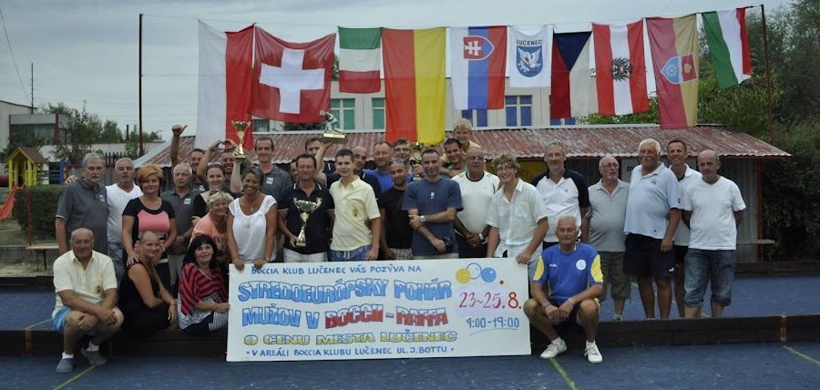

27. augusta 2025
XV. Stredoeurópsky pohár klubov boccia raffa 2025
Turnaj šiestich družstiev, z toho štyroch zahraničných, sa konal tri dni v Lučenci. Pravidelne sa ho zúčastňujú kluby z Maďarska, Poľska, Chorvátska, Turecka a Talianska. Víťazom sa po finále s rovnosťou bodov stal BK Pržina – Team Slovakia (4:3).
Výsledky a fotky z Lučenca